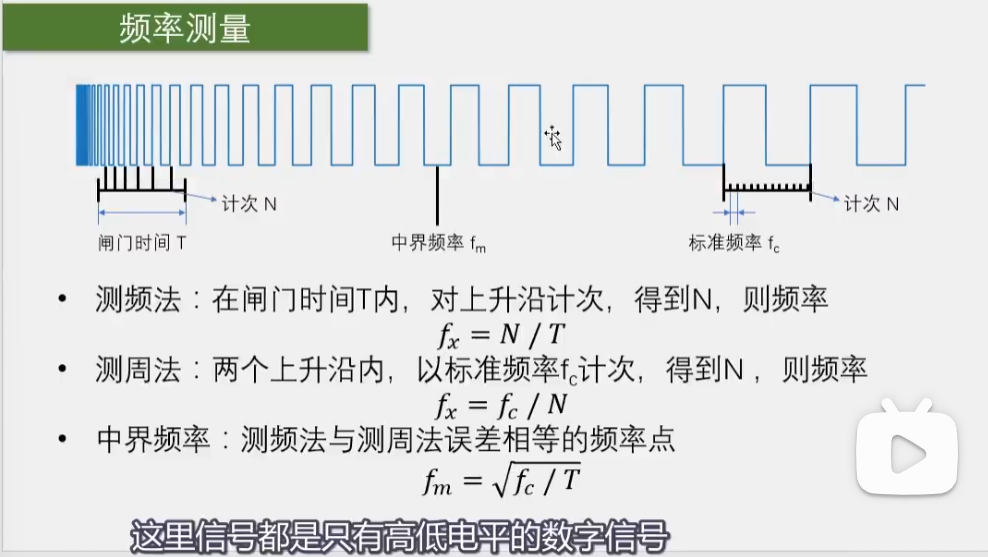
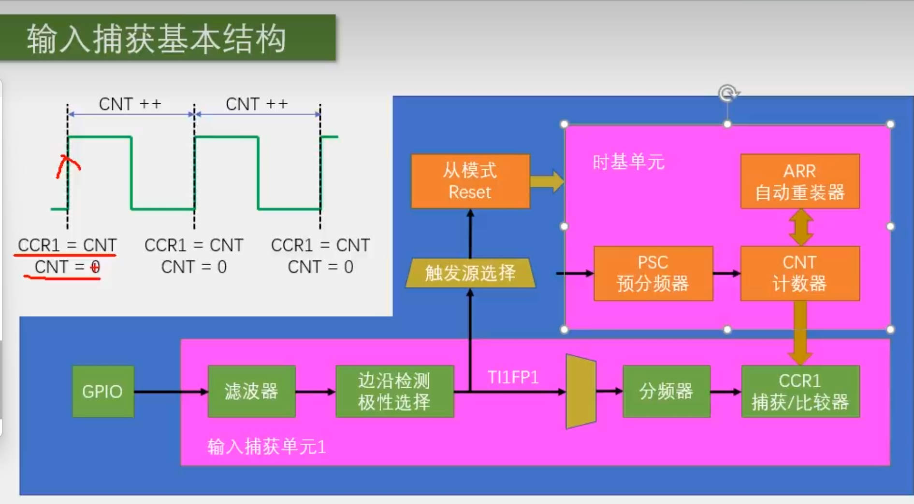
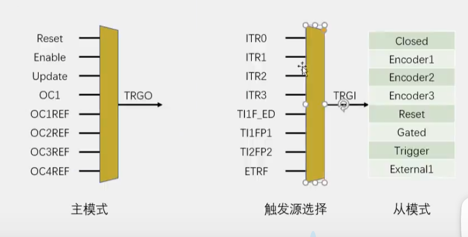

STM32
定时器（TIM）学习笔记（三）
Part 3. 输入捕获模式
1. 简介
输出比较是将CNT的值与CCR进行比较以此作为输出的判断依据，而输入捕获则是将CNT的值存在CCR之中。
输入捕获模式与输出比较模式是相对的，且他们共用四个CCR寄存器，同时CH1到CH4的引脚也是共用的。
所以对于同一个定时器，要么选择输入捕获，要么选择输出比较，二者不可同时使用。
PWMI模式是专门为测量PWM的频率与占空比设计的。
2. 频率测量

image-20240317113931545
stm32只能测量方波，如果想要测量正弦波，还需要一个信号预处理电路
2.1 测频法
频率是一秒内来了多少个周期
所以我们可以在一个固定时间内数有多少个周期。
而对于方波来说，只需要计数上升沿或者下降沿就可以。
该方法要求信号频率低，且测出来的是平均值。
2.2 测周法
正如前文所说，两个上升沿之间的时间就是一个周期
那么我们只需要测量出两个上升沿之间的时间，再取一个倒数，就是频率
想要实现这点，我们需要一个计时器，这个及时器就是标准频率 \(f_c\),我们测量两个上升沿之间这个计数器记了多少次数，那么\(N/f_c\)就是周期，再对其取到数即可
该方法要求信号频率低，周期大，且测出来的是单次值。
2.3 中界频率
当\(N\)相同时，我们有\[f_x^2 = \frac{N}{T}\frac{f_c}{N} =
\frac{f_c}{T}\]
由此可得PPT上的公式。
3.
输入捕获基本结构与主从触发模式

image-20240317125413540
TIFP只有CH1和CH2拥有，3和4没有，如果想用3和4作为计数器，那么只能使用中断函数，这样对于STM32的负载就较高

image-20240317140347914
在STM32中，主从触发模式是一种定时器工作模式，通常用于多个定时器之间的同步操作。在主从触发模式下，存在一个主定时器（Master
Timer）和一个或多个从定时器（Slave
Timer）。主定时器负责产生一个触发信号，而从定时器则根据这个触发信号进行触发操作。
让我用一个生动的例子来解释主从触发模式：
假设你是一位指挥官，手下有一支士兵队伍。你想要确保所有的士兵同时进行某个任务，以保持队伍的整齐和效率。为了做到这一点，你使用了主从触发模式：
- 主定时器（Master
Timer）：你作为指挥官，负责发出指令。你会向队伍发出一个统一的口令，例如“出发！”。这个口令就相当于主定时器产生的触发信号。
- 从定时器（Slave
Timer）：队伍中的每个士兵都是一个从定时器，他们听到你的口令后，立即开始执行任务。他们的行动是根据你的口令进行触发的。
在这个例子中，你就是主定时器，而士兵们则是从定时器。主定时器负责发出触发信号（口令），而从定时器则根据这个信号进行相应的动作（执行任务）。
4.代码实现
1
| TIM_PrescalerConfig(TIM2, Prescaler, TIM_PSCReloadMode_Immediate)
|
这个函数可以配置某个定时器的PSC，同时可以通过配置Preload的模式来选择是立即生效还是一个周期之后生效。
1
2
| TIM_ICInit(TIM3, &TIM_ICInitStructure)
|
这个函数可以选择定时器，并且配置这个定时器的结构体
这里注意，GPIO选择上拉输入模式
注意，CNT的值不能超过ARR的值，所以我们要尽可能大的配置ARR的值
1
2
3
4
5
6
7
8
9
10
11
| TIM_ICInitTypeDef TIM_ICInitStructure;
TIM_ICInitStructure.TIM_Channel = TIM_Channel_1;
TIM_ICInitStructure.TIM_ICFilter = 0xF;
TIM_ICInitStructure.TIM_ICPolarity = TIM_ICPolarity_Rising;
TIM_ICInitStructure.TIM_ICSelection = TIM_ICSelection_DirectTI;
TIM_ICInit(TIM3, &TIM_ICInitStructure);
|
1
2
3
4
| TIM_SelectInputTrigger(TIM3, TIM_TS_TI1FP1);
TIM_SelectSlaveMode(TIM3, TIM_SlaveMode_Reset);
|
如果我们还想测试占空比，那么可以用以下代码初始化：
1
2
3
4
5
6
7
| TIM_ICInitTypeDef TIM_ICInitStructure;
TIM_ICInitStructure.TIM_Channel = TIM_Channel_1;
TIM_ICInitStructure.TIM_ICFilter = 0xF;
TIM_ICInitStructure.TIM_ICPolarity = TIM_ICPolarity_Rising;
TIM_ICInitStructure.TIM_ICPrescaler = TIM_ICPSC_DIV1;
TIM_ICInitStructure.TIM_ICSelection = TIM_ICSelection_DirectTI;
TIM_PWMIConfig(TIM3, &TIM_ICInitStructure);
|
注意，这个函数只选择通道1或者通道2，当时通道3时，则应该会配置通道4
5.全代码
IC.c
1
2
3
4
5
6
7
8
9
10
11
12
13
14
15
16
17
18
19
20
21
22
23
24
25
26
27
28
29
30
31
32
33
34
35
36
37
38
39
40
41
42
| #include "stm32f10x.h"
void IC_Init(void)
{
RCC_APB1PeriphClockCmd(RCC_APB1Periph_TIM3, ENABLE);
RCC_APB2PeriphClockCmd(RCC_APB2Periph_GPIOA, ENABLE);
GPIO_InitTypeDef GPIO_InitStructure;
GPIO_InitStructure.GPIO_Mode = GPIO_Mode_IPU;
GPIO_InitStructure.GPIO_Pin = GPIO_Pin_6;
GPIO_InitStructure.GPIO_Speed = GPIO_Speed_50MHz;
GPIO_Init(GPIOA, &GPIO_InitStructure);
TIM_InternalClockConfig(TIM3);
TIM_TimeBaseInitTypeDef TIM_TimeBaseInitStructure;
TIM_TimeBaseInitStructure.TIM_ClockDivision = TIM_CKD_DIV1;
TIM_TimeBaseInitStructure.TIM_CounterMode = TIM_CounterMode_Up;
TIM_TimeBaseInitStructure.TIM_Period = 65536 - 1;
TIM_TimeBaseInitStructure.TIM_Prescaler = 72 - 1;
TIM_TimeBaseInitStructure.TIM_RepetitionCounter = 0;
TIM_TimeBaseInit(TIM3, &TIM_TimeBaseInitStructure);
TIM_ICInitTypeDef TIM_ICInitStructure;
TIM_ICInitStructure.TIM_Channel = TIM_Channel_1;
TIM_ICInitStructure.TIM_ICFilter = 0xF;
TIM_ICInitStructure.TIM_ICPolarity = TIM_ICPolarity_Rising;
TIM_ICInitStructure.TIM_ICPrescaler = TIM_ICPSC_DIV1;
TIM_ICInitStructure.TIM_ICSelection = TIM_ICSelection_DirectTI;
TIM_ICInit(TIM3, &TIM_ICInitStructure);
TIM_SelectInputTrigger(TIM3, TIM_TS_TI1FP1);
TIM_SelectSlaveMode(TIM3, TIM_SlaveMode_Reset);
TIM_Cmd(TIM3, ENABLE);
}
uint32_t IC_GetFreq(void)
{
return 1000000 / (TIM_GetCapture1(TIM3) + 1);
}
|
IC.h
1
2
3
4
5
6
7
8
9
| #ifndef __IC_H
#define __IC_H
void IC_Init(void);
uint32_t IC_GetFreq(void);
#endif
|
PWM.c
1
2
3
4
5
6
7
8
9
10
11
12
13
14
15
16
17
18
19
20
21
22
23
24
25
26
27
28
29
30
31
32
33
34
35
36
37
38
39
40
41
42
43
44
45
46
47
| #include "stm32f10x.h"
void PWM_Init(void)
{
RCC_APB1PeriphClockCmd(RCC_APB1Periph_TIM2, ENABLE);
RCC_APB2PeriphClockCmd(RCC_APB2Periph_GPIOA, ENABLE);
GPIO_InitTypeDef GPIO_InitStructure;
GPIO_InitStructure.GPIO_Mode = GPIO_Mode_AF_PP;
GPIO_InitStructure.GPIO_Pin = GPIO_Pin_0;
GPIO_InitStructure.GPIO_Speed = GPIO_Speed_50MHz;
GPIO_Init(GPIOA, &GPIO_InitStructure);
TIM_InternalClockConfig(TIM2);
TIM_TimeBaseInitTypeDef TIM_TimeBaseInitStructure;
TIM_TimeBaseInitStructure.TIM_ClockDivision = TIM_CKD_DIV1;
TIM_TimeBaseInitStructure.TIM_CounterMode = TIM_CounterMode_Up;
TIM_TimeBaseInitStructure.TIM_Period = 100 - 1;
TIM_TimeBaseInitStructure.TIM_Prescaler = 720 - 1;
TIM_TimeBaseInitStructure.TIM_RepetitionCounter = 0;
TIM_TimeBaseInit(TIM2, &TIM_TimeBaseInitStructure);
TIM_OCInitTypeDef TIM_OCInitStructure;
TIM_OCStructInit(&TIM_OCInitStructure);
TIM_OCInitStructure.TIM_OCMode = TIM_OCMode_PWM1;
TIM_OCInitStructure.TIM_OCPolarity = TIM_OCPolarity_High;
TIM_OCInitStructure.TIM_OutputState = TIM_OutputState_Enable;
TIM_OCInitStructure.TIM_Pulse = 0;
TIM_OC1Init(TIM2, &TIM_OCInitStructure);
TIM_Cmd(TIM2, ENABLE);
}
void PWM_SetCompare1(uint16_t Compare)
{
TIM_SetCompare1(TIM2, Compare);
}
void PWM_SetPrescaler(uint16_t Prescaler)
{
TIM_PrescalerConfig(TIM2, Prescaler, TIM_PSCReloadMode_Immediate);
}
|
main.c
1
2
3
4
5
6
7
8
9
10
11
12
13
14
15
16
17
18
19
20
21
22
23
| #include "stm32f10x.h" // Device header
#include "Delay.h"
#include "OLED.h"
#include "PWM.h"
#include "IC.h"
int main(void)
{
OLED_Init();
PWM_Init();
IC_Init();
OLED_ShowString(1, 1, "Freq:00000Hz");
PWM_SetPrescaler(720 - 1); //Freq = 72M / (PSC + 1) / 100
PWM_SetCompare1(50); //Duty = CCR / 100
while (1)
{
OLED_ShowNum(1, 6, IC_GetFreq(), 5);
}
}
|